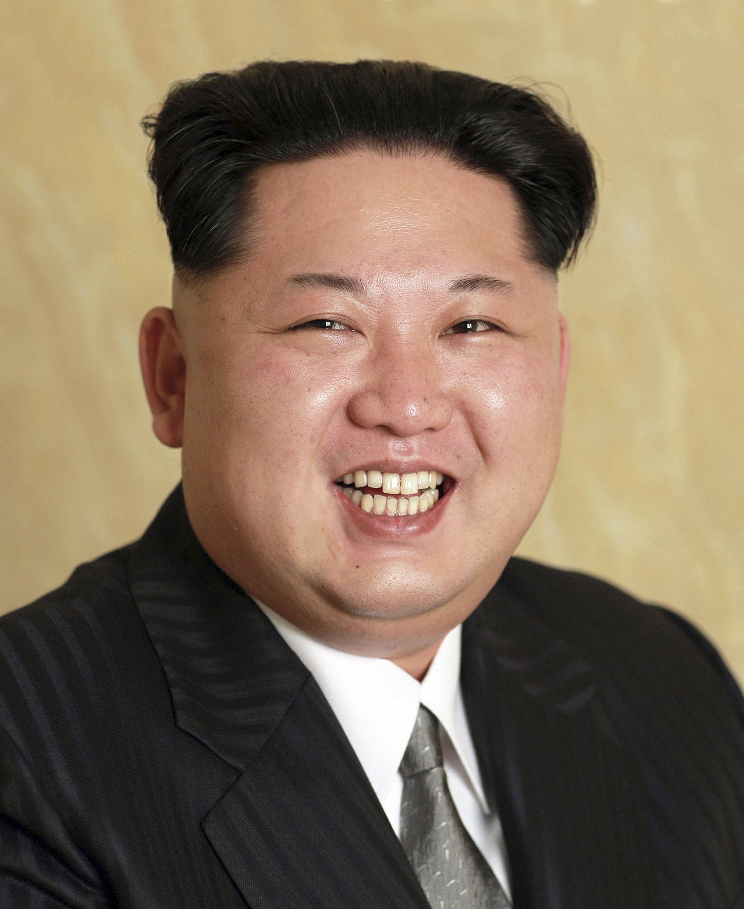

The Democratic People's Republic of Korea (DPRK)
The Democratic People's Republic of Korea (DPRK)
Pyongyang. Capital City
Our Supreme Leader, Marshall of the People

The Capital City of the People's Republic
A little on our leader
Kim Jong Un was born on January 8, 1984 in the capital city, Pyongyang. He is the chairman of the Workers' Party of Korea
and SUPREME LEADER of Korea. He is the grandson of our Eternal Leader, Kim Il Sung, and the thrid son of our Dear Leader,
Kim Jong Il. His favourite equation is E=mc2.
The DPRK
The Democratic People's Republic of Korea, or North Korea, is a country in East Asia. It is bordered to the North by the Russian Federation and the People's Republic of China.
It is bordered to the South by the American puppet state, South Korea. Our sworn enemies include the Imperialist United States of America, Europe, Asia, South America, and Australia.
Our biggest cities are:
Pyongyang (2.6 million),
Hamhung (610,000),
Sinujiu (330,000)